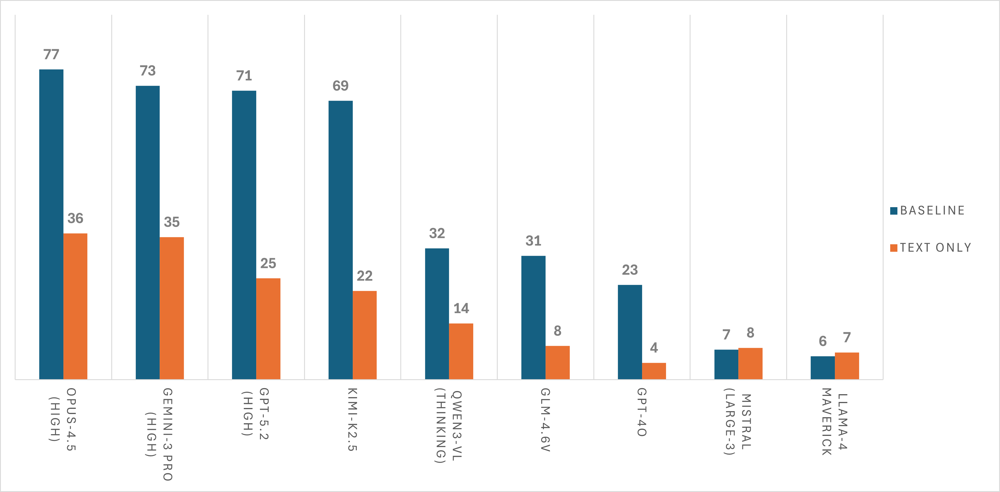
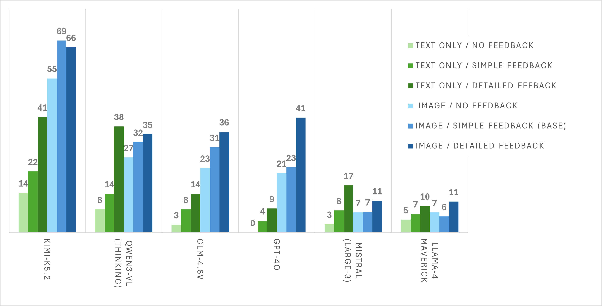
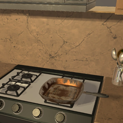
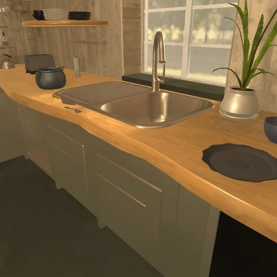
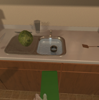
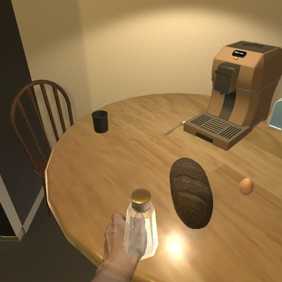
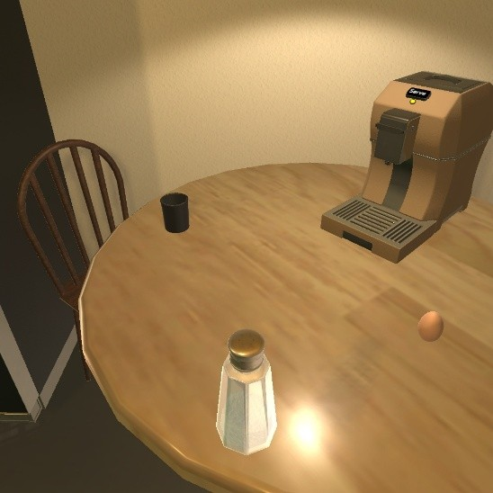
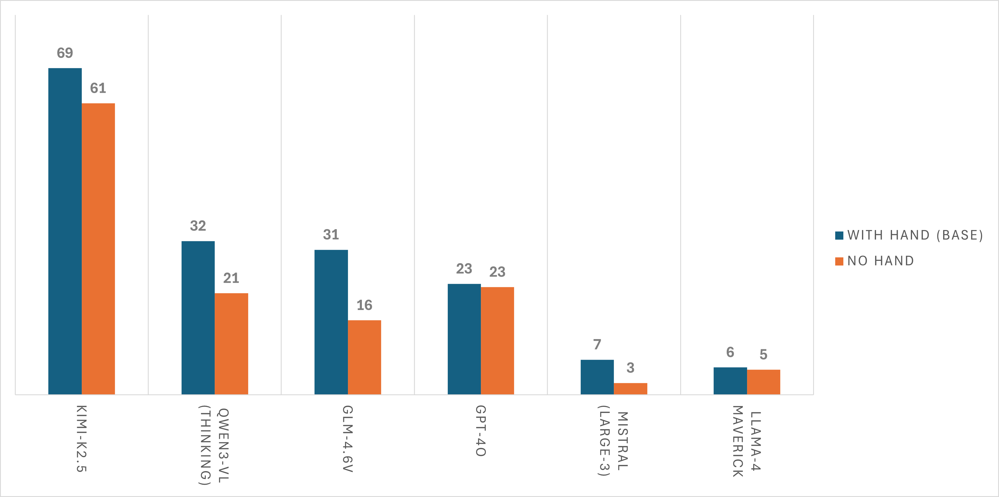
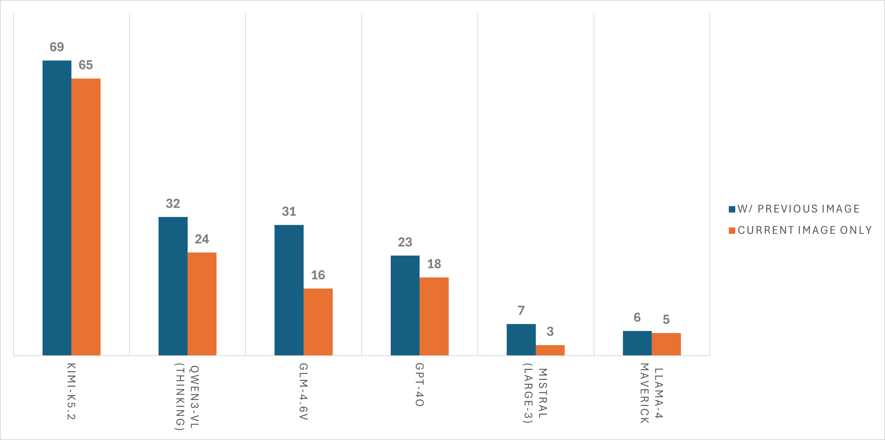
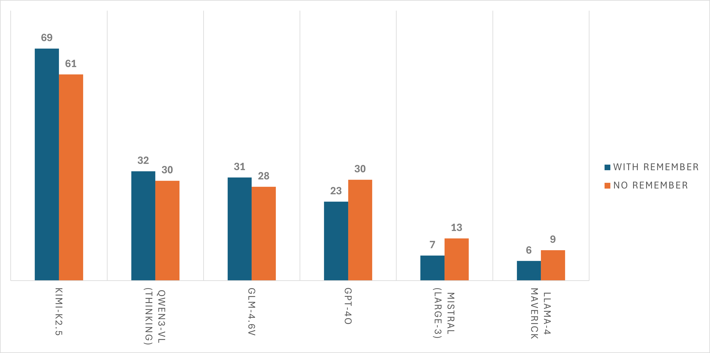

The agent adapts its plan at every step based on new visual observations. A dirty mug triggers a cleaning detour; a blocked sink triggers clearing objects first.
AsgardBench evaluates visually grounded interactive planning — the ability of vision-language models to generate and adapt action sequences based on visual observations during execution, rather than following fixed plans. Unlike prior embodied AI benchmarks that conflate reasoning with navigation or provide rich corrective feedback, AsgardBench restricts agent input to images, action history, and lightweight success/failure signals.
The benchmark contains 108 task instances spanning 12 task types across kitchens, living rooms, and bathrooms, each systematically varied through object state, placement, and scene configuration. These variations create conditional branches where a single instruction can require entirely different action sequences depending on what the agent observes.
Our evaluations of leading vision-language models show that performance drops sharply without visual input, revealing weaknesses in visual grounding and state tracking that undermine interactive planning. Can a model actually use what it sees to adapt a plan when things don't go as expected?
↻ Repeat until all goals are met or termination conditions are reached
AsgardBench is built on AI2-THOR, a 3D simulator providing photorealistic indoor environments. Navigation is abstracted away — a FIND action teleports the agent to objects — isolating the planning challenge from low-level control.
The agent receives only two images (current and previous observation), its action history, and a binary success/failure signal after each action. No textual descriptions of the scene, no detailed error messages.
Task variations alter object cleanliness, fill state, and placement to create conditional branches. For example, the instruction "Prepare a mug of coffee" can require completely different action sequences depending on whether the mug is clean or dirty, whether the sink is clear or blocked, and where objects are located:
92 plans for a single instruction ("Prepare coffee") branch into different execution paths depending on mug state, scene layout, and obstacles. Scroll and hover over nodes for details.

Success rate comparison: image-based (baseline) vs. text-only across 9 frontier and near-frontier vision-language models.
| # | Model | With Images | Text-Only | Δ |
|---|---|---|---|---|
| 1 | Claude Opus 4.5 | 76.5% | 36.1% | +40.4% |
| 2 | Gemini 3 Pro | 72.5% | 35.2% | +37.3% |
| 3 | GPT-5.2 | 71.3% | 25.0% | +46.3% |
| 4 | Kimi-K2.5 | 68.8% | 21.9% | +46.9% |
| 5 | Qwen3-VL-235B | 32.4% | 13.9% | +18.5% |
| 6 | GLM-4.6V | 30.6% | 8.3% | +22.3% |
| 7 | GPT-4o | 23.4% | 4.2% | +19.2% |
| 8 | Mistral-Large-3 | 7.4% | 7.9% | −0.5% |
| 9 | Llama-4 Maverick | 5.8% | 6.7% | −0.9% |
We test three feedback conditions: No Feedback, Baseline (success/failure), and Detailed Feedback (textual descriptions of why actions failed). Detailed feedback substantially reduces the need for visual grounding by providing explicit corrective information that could, in principle, guide the agent toward the correct action sequence. For some models — notably Qwen3-VL, Mistral-Large-3, and Maverick — text-only with detailed feedback can match or exceed the image-based baseline. However, for the strongest vision-capable models (e.g., Kimi-K2.5, GPT-4o), image-based performance remains substantially higher, suggesting that visual grounding provides information beyond what corrective feedback alone can supply.

Performance under different feedback conditions. Detailed feedback significantly boosts both image-based and text-only agents.
Even the strongest models make striking visual errors. Here are real examples from our evaluations:

Reality: Warm lighting reflections on a clean stainless steel pan. No fire present.

Reality: There's no mug in the sink. The model confuses the reflection for one.
Reality: The mug is empty. The bottom of the mug is misinterpreted as liquid content.

Reality: There is no stool — the model is misidentifying the held DishSponce as one.
← Scroll for more examples →
AsgardBench renders a translucent hand overlay when the agent is holding an object, providing a visual cue about object possession. Removing this overlay causes universal performance drops across all models — agents struggle to determine whether objects are being held or resting on surfaces.

With hand overlay
Agent knows it's holding the saltshaker

Without hand overlay
Is the saltshaker on the table or being held?

The baseline configuration provides the agent with two images: the current observation and the previous observation. Removing the previous image leads to consistent performance degradation. Models use the image pair to detect state changes resulting from their actions — for instance, verifying that a faucet was actually turned on, or that an object was successfully placed.

Removing the previous observation image degrades performance across models, confirming that agents use temporal visual context for state tracking.
AsgardBench allows models to maintain a "Things to Remember" scratch pad — a free-form text field the model can update each turn to track state, record observations, and plan ahead. Results are mixed: stronger models benefit from this memory scaffold, while weaker models see little impact or even performance decreases. This suggests that effective use of external memory requires a baseline level of planning capability.

The memory scaffold helps strong models but provides inconsistent benefits for weaker ones.
@article{tupini2026asgardbench,
title = {AsgardBench: Evaluating Visually Grounded Interactive Planning Under Minimal Feedback},
author = {Tupini, Andrea and Liden, Lars and Tan, Reuben and Wang, Yu and Gao, Jianfeng},
year = {2026},
}